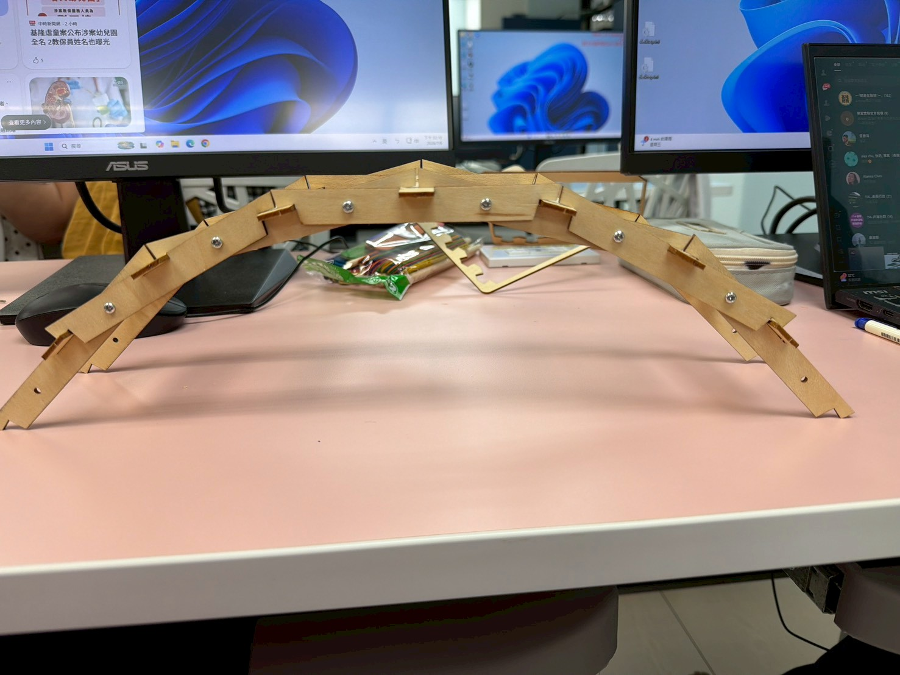
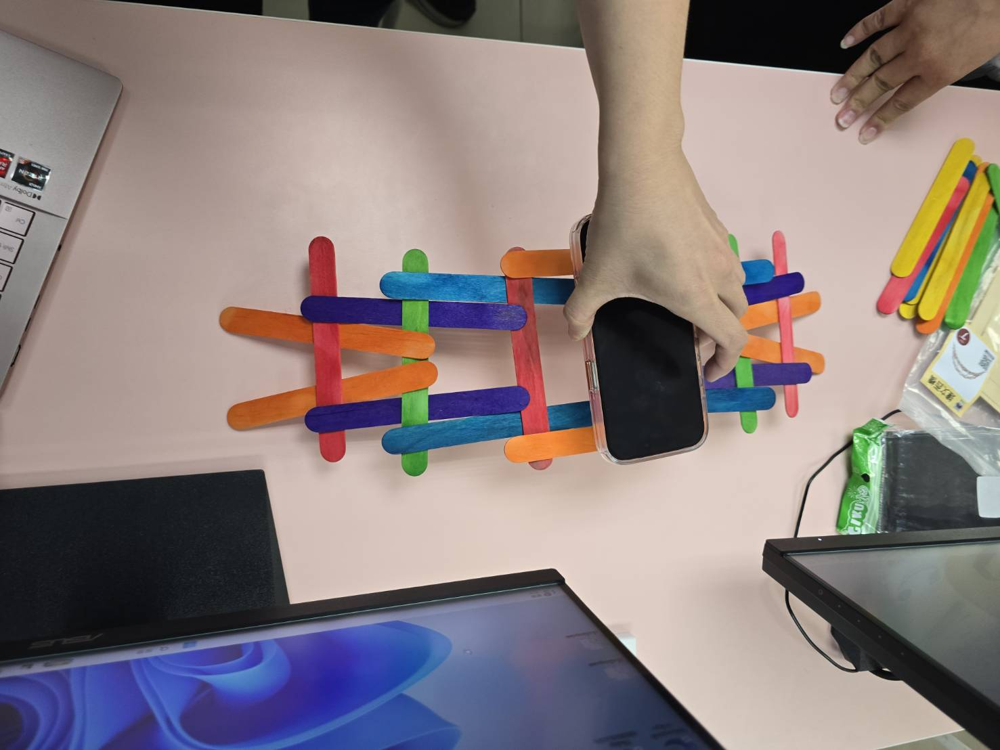

STEAM 總覽
5 分鐘小組報告 | STEAM
用 STEAM 看達文西橋
從結構原理、材料差異到 M 的承重估算，展示我們如何把橋做出來，也把力算出來。

How to Build
達文西橋怎麼做
這一區可以在報告中直接示範製作流程：先看材料，再依序說明排列、互鎖、調整與測試。
材料與工具
- 冰棒棍、竹筷或教具包木條
- 尺、鉛筆、膠帶或橡皮筋
- 需要展示搬動時，可加入釘子或固定件
- 測試承重用的小砝碼、水瓶或書本

Step 1
準備材料，先確認尺寸一致
把木條依長度與厚度整理好，尺寸越一致，後面交錯時越容易保持左右對稱。
報告提示：先說材料差異會影響摩擦力與節點穩定。M | Mathematics
承重不是猜，是用假設算出安全範圍
達文西橋真正受力很複雜，所以報告中使用簡化模型：先量或估單支材料能承受的重量，再乘上有效承重支數與節點效率，最後除以安全係數。
估算承重 kgf = 單支安全承重 x 有效承重支數 x 節點效率 / 安全係數
換算牛頓 N 約為 kgf x 9.8
估算安全承重
1.76 kgf 約 17.2 N材料實作比較
同樣是達文西橋，材料會改變組裝策略
材料
優點
限制
承重觀察
彩色冰棒棍
扁平、好排列，顏色能分辨不同層次與受力方向。
厚度較薄，長跨距時容易彎曲，節點摩擦力有限。
適合示範原理；承重主要受彎曲與節點滑動限制。
一般竹筷
材料較硬，單支抗彎能力通常比冰棒棍好。
圓形接觸面容易滾動，不易卡準角度，常需要綁線、切槽或膠帶輔助。
單支強度高，但如果節點會滑，整橋承重不一定最高。
小浣熊教具包
尺寸一致、孔位或固定件明確，組裝穩定，適合展示。
因為固定件提高穩定性，和完全無釘的達文西橋原理不完全相同。
節點效率最高，較能把材料強度轉換成整體承重。
我們學會了什麼
做出橋之後，才真正看見力怎麼流動
S 科學
重量向下作用，木條透過接觸與摩擦把力傳到兩側支撐點。
T 技術
影片和照片記錄組裝過程，也讓我們回頭檢查哪個節點最容易位移。
E 工程
不同材料需要不同固定策略，設計必須同時考慮強度、穩定和可展示性。
M 數學
用安全係數保守估算承重，比只說「很穩」更有說服力。